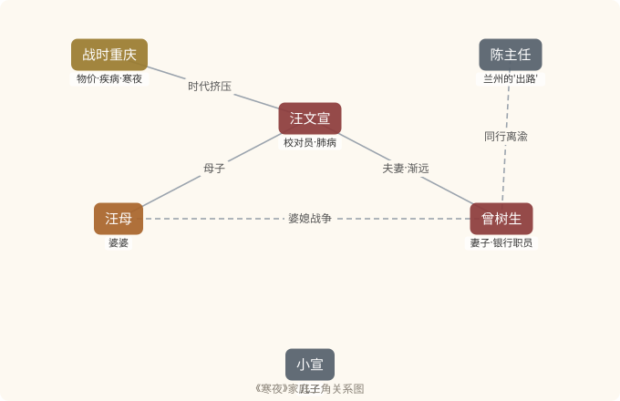

寒夜
一、基本信息
| 作者 | 巴金 |
|---|---|
| 成书/出版 | 1947年出版（Britannica：Hanye (1947; Cold Nights)） Ba Jin — Encyclopaedia Britannica（百科全书） |
| 国别/地区 | 中国 |
| 时代 | 现当代 · 现代 |
| 体裁 | 长篇小说 |
| 语言 | 汉语（白话） |

《寒夜》家庭三角关系图（人物关系图）
二、创作背景
Britannica（Ba Jin 条）：Qiyuan (1944; 'Pleasure Garden') and Hanye (1947; Cold Nights) 为其1940年代作品——'in the 1940s his tone grew more pessimistic and less radical, with sharper, truer insight into human relationships'（1940年代其笔调更悲观、更不激进，对人际关系的洞察更敏锐真实）。
时代背景：抗战末期的重庆——小职员家庭在物价飞涨、疾病与婆媳矛盾中的崩解（通说）。
创作缘起：巴金自述以友人万家宝（曹禺？不对——是其熟人）……实为以其周围小知识分子的生活为底本（创作谈《谈〈寒夜〉》——通说待核）。
三、内容脉络
重庆，1944年冬：图书公司校对汪文宣（肺结核）与妻子曾树生（银行'花瓶'职员）——曾经的教育理想主义者沦为柴米油盐的困兽；母亲从上海来同住，婆媳战争（通说）。
撕裂：树生与婆婆无法共处；汪文宣夹在中间无能为力——'我是个老好人'（原文意，待核）；树生跟随陈主任去兰州（为生计与逃离），留下丈夫与儿子（通说细节）。
崩溃：文宣肺病加重而死；母亲带孙儿离渝；树生抗战胜利后返渝寻夫——只见坟墓与'寒夜'（通说细节）；结尾她在寒夜中独自走向未知的黑暗（通说）。
四、主要人物表
| 人物 | 身份 | 说明 |
|---|---|---|
| 汪文宣 | 校对员 | 善良、懦弱、'老好人'——巴金笔下最压抑的男性形象 |
| 曾树生 | 银行职员·妻子 | 追求'活着'的权利——被婆媳战争与贫困逼走的现代女性（通说） |
| 汪母 | 婆婆 | '我是你的母亲'——旧式母爱与家庭战争的火种（通说） |
| 小宣 | 儿子 | 沉默的孩子——家庭的第三代 |
| 陈主任 | 树生上司 | 带树生去兰州的'出路'提供者 |
五、主题与艺术特点
- '好人无好报'的控诉：没有坏人却人人受损——制度与时代的恶（巴金创作谈意，通说待核）。
- 婆媳战争的现代解剖：新旧伦理、经济依附与情感竞争（通说）。
- 小知识分子的失败：教育理想在战时经济中的破产（通说）。
- 艺术特点：与《家》的青春呼喊相反——冷峻的白描、日常琐碎的心理细节、'寒夜'意象的全书统摄。
六、影响与评论
- Britannica（Ba Jin 条）：Hanye (1947; Cold Nights) 列为主要作品——'sharper, truer insight into human relationships'。
Ba Jin — Encyclopaedia Britannica（百科全书） - Britannica：1940年代'更悲观更少激进'——本作为其文学成熟期的代表。
Ba Jin — Encyclopaedia Britannica（百科全书） - 批评史：《寒夜》地位在1980年代后被大幅重估（'巴金最好的小说'说——通说待核）。
Ba Jin — Encyclopaedia Britannica（百科全书） - 改编：1955年香港电影（通说待核）与电视剧（通说待核）。
Ba Jin — Encyclopaedia Britannica（百科全书）
七、阅读建议
难点
- 没有'事件'——全靠日常细节与心理（物价、咳嗽、信件）推进。
- 婆媳各自的'有理'——不要简单站队。
- 结尾的开放与黑暗——巴金式的'寒夜'意象。
- 《巴金全集》（人民文学出版社）含《寒夜》：标准。
- 《寒夜》单行本（人民文学出版社'巴金选集'）：通行。
通读 → 精读婆媳冲突两场与结尾寻夫段 → 对照《家》看巴金从青春到沉郁的转变。
八、待核实
- 初版（1947年3月晨光出版公司说，通称）细节待核。
- 巴金《谈〈寒夜〉》的创作谈出处待核。
- 影视改编年表（1955/1984等）待核。
- 曾树生原型讨论（学界）待核。
本页主要来源
巴金的其他收录作品：家